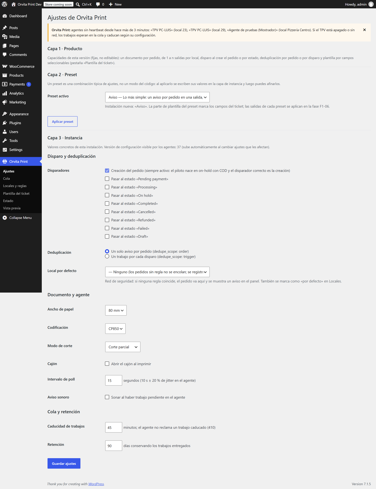
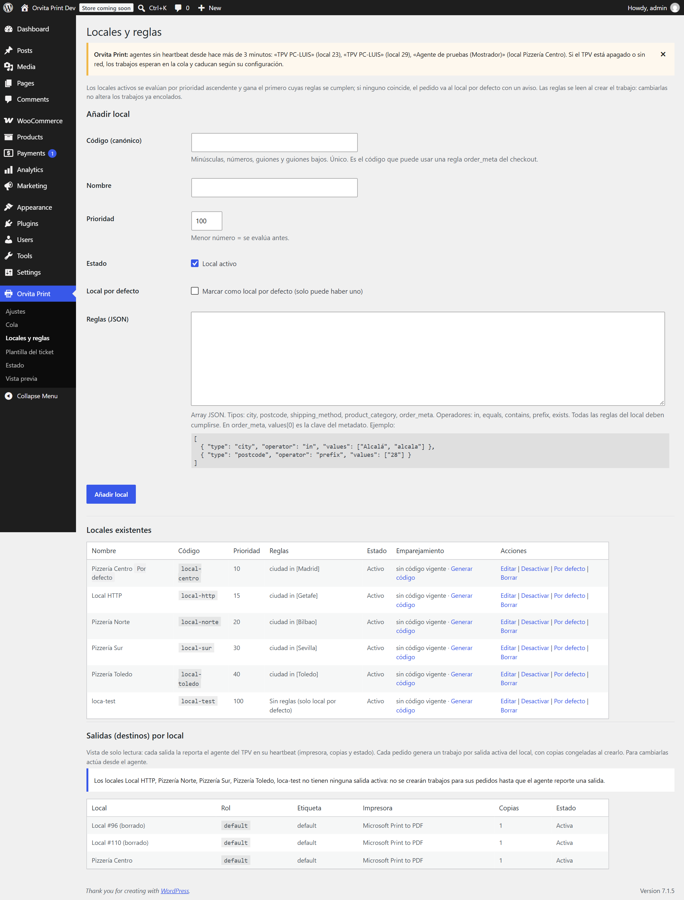
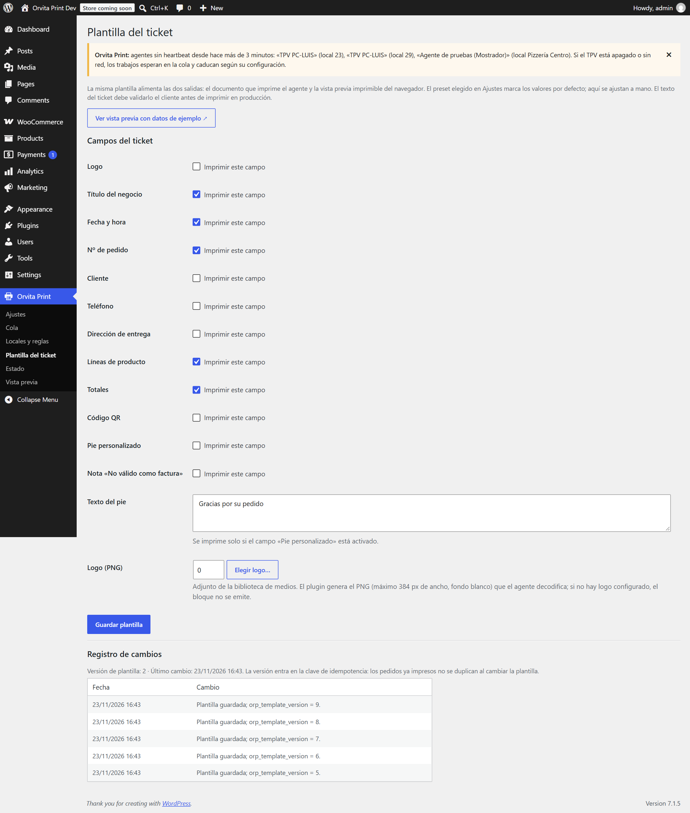
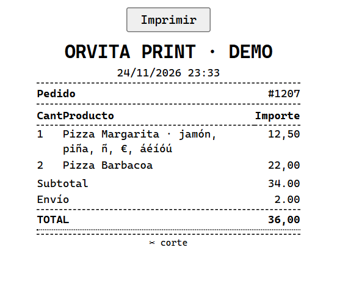
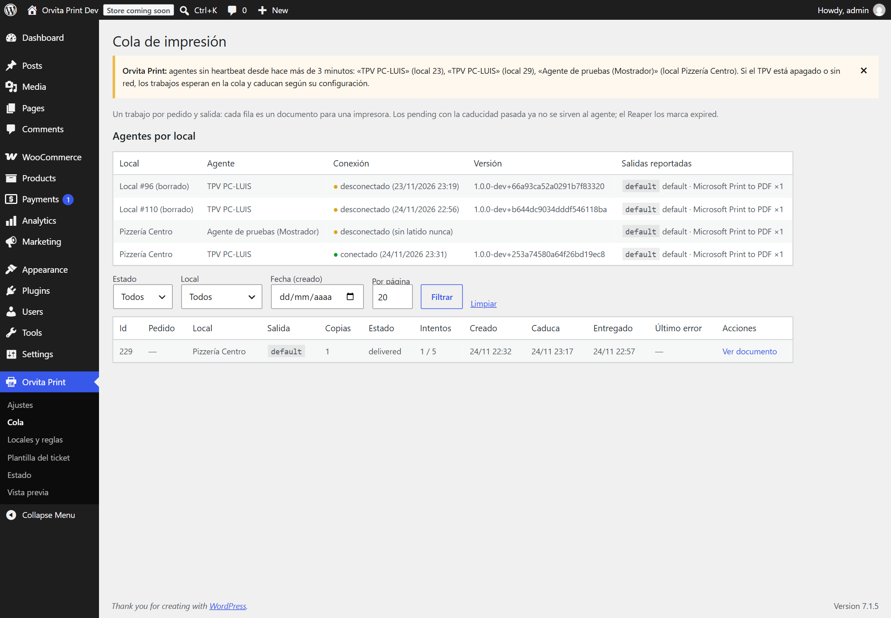
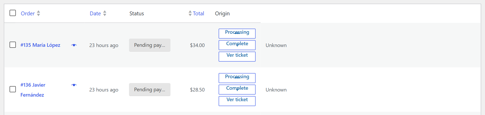
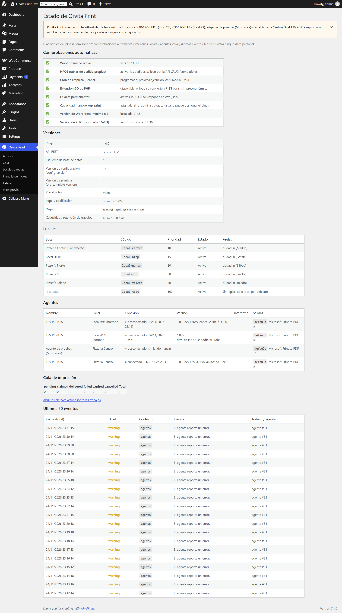

orp-print)Manual de instalación, configuración y uso del plugin de WordPress/WooCommerce Orvita Print (orp-print).
wp-json/orp-print/v1Orvita Print convierte cada pedido de WooCommerce en un documento neutro (JSON, versión 1) que se encola para el local físico que corresponda (tienda, barra, cocina…). Un agente opcional para Windows instalado en el TPV reclama esos trabajos vía HTTPS y los imprime en la impresora térmica.
Sin el agente el plugin también es útil: puedes configurar locales, diseñar la plantilla, previsualizar el ticket e imprimirlo a mano desde el navegador. No hay comprobación de licencia ni llamadas a servidores de Orvita.
Arquitectura en una frase: pedido → documento neutro → cola por local → agente → impresora térmica.
Capacidades de la versión actual (capa «Producto»):
orp-print a /wp-content/plugins/ (o instálala desde Plugins → Añadir nuevo → Subir plugin con el ZIP).manage_orp_print al rol administrator (única capacidad que protege todo el panel).El plugin declara compatibilidad con HPOS (tablas de pedido propias de WooCommerce). Todos los accesos al pedido usan la API CRUD de WooCommerce, así que funciona igual con HPOS activado o desactivado. Puedes comprobarlo en Orvita Print → Estado.
Tras instalar, este es el recorrido mínimo recomendado:
Página: Orvita Print → Ajustes. El panel es el único lugar donde se modifican los ajustes de la instalación.

| Capa | Qué es | ¿Editable? |
|---|---|---|
| 1 · Producto | Qué puede hacer esta versión del plugin (lista fija de capacidades) | No |
| 2 · Preset | Combinación típica de ajustes; al aplicarla se escriben sus valores en la instancia | Sí (desplegable + «Aplicar preset») |
| 3 · Instancia | Los valores concretos de tu instalación | Sí (formulario + «Guardar ajustes») |
Un preset es configuración, no un modo del código: después de aplicarlo puedes afinar la instancia a mano.
| Preset | Qué hace |
|---|---|
| Aviso (por defecto) | Lo más simple: un aviso por pedido en una salida, al crear el pedido. Plantilla mínima (título, fecha/hora, nº pedido, líneas, totales). |
| Completo | Ticket con todos los campos (logo, cliente, teléfono, dirección, QR, pie, nota «no factura») en una sola salida, al crear el pedido. |
| Cocina + cliente | Dos disparadores (creación + estado «En proceso»), un trabajo por cada disparo (dedupe_scope: trigger), corte completo y aviso sonoro. Las 2 salidas reales las aplica el agente reportándolas (en V1 se imprime la plantilla vigente única en todas las salidas). |
| Personalizado | Sin cambios automáticos: mandan los valores de instancia. |
Disparo y deduplicación
| Campo | Valores | Descripción |
|---|---|---|
| Disparadores | created (fijo) + estados de WooCommerce |
El disparo por creación del pedido está siempre activo. Puedes añadir «Pasar al estado…» para cualquiera de los estados de pedido de WooCommerce (p. ej. processing, on-hold). |
| Deduplicación | order / trigger |
Un solo aviso por pedido (aunque cambie de estado dos veces) o un trabajo por cada disparo (reimprime al pasar de estado). |
| Local por defecto | un local o «Ninguno» | Red de seguridad: si ninguna regla coincide, el pedido va aquí y se muestra un aviso en el panel. Con «Ninguno», los pedidos sin regla no se encolan (solo se registran en el log). Se sincroniza con la marca «Por defecto» de la página Locales. |
Documento y agente (su cambio sube orp_config_version; el agente re-sincroniza solo)
| Campo | Valores | Por defecto |
|---|---|---|
| Ancho de papel | 80 mm / 58 mm |
80 |
| Codificación | CP850 / CP858 / CP437 |
CP850 |
| Modo de corte | Corte parcial / completo | Parcial |
| Abrir cajón | Sí/No | No |
| Intervalo de poll | 1–600 segundos | 10 s (el agente aplica ±20 % de jitter) |
| Aviso sonoro | Sí/No — suena al haber trabajo pendiente | No |
Cola y retención
| Campo | Rango | Por defecto | Efecto |
|---|---|---|---|
| Caducidad de trabajos | 1–1440 min | 30 | Un trabajo pending caducado ya no se sirve al agente (HTTP 410); la limpieza automática lo marca expired. |
| Retención | 1–3650 días | 90 | Días que se conservan los trabajos entregados antes de la limpieza. |
Saneado automático: los valores fuera de rango vuelven al límite o al defecto (p. ej. poll 0 → 10, ancho 999 → 80).
Página: Orvita Print → Locales y reglas. Cada local es un destino físico (tienda, barra, cocina…) al que se asignan pedidos.

| Campo | Reglas |
|---|---|
| Código (canónico) | Minúsculas, números, guiones y guiones bajos. Máx. 32 caracteres. Único. Es el código que puede usar una regla order_meta del checkout. |
| Nombre | Nombre visible (máx. 120 caracteres). |
| Prioridad | 0–65535. Menor número = se evalúa antes. |
| Estado | Local activo/inactivo. Un local inactivo no recibe pedidos. |
| Local por defecto | Solo puede haber uno. Destino de los pedidos que no coinciden con ninguna regla (con aviso en el panel). |
| Reglas (JSON) | Array JSON (ver 5.2). Se valida al guardar: JSON inválido, regla con tipo/operador/valores no admitidos o más de 20 reglas → error y no se guarda. |
Acciones por fila: Editar · Activar/Desactivar · Por defecto · Generar código de emparejamiento · Borrar (borra el local junto con sus salidas y agentes; pide confirmación).
Importante: las reglas se leen al crear el trabajo. Cambiarlas después no altera los trabajos ya encolados.
Todas las reglas del local deben cumplirse (AND). Tipos y operadores admitidos:
| Tipo | Filtra por | Operadores válidos |
|---|---|---|
city |
Ciudad de envío | in, equals, contains, prefix, exists |
postcode |
Código postal | in, equals, contains, prefix, exists |
shipping_method |
Método de envío | in, equals, contains, prefix, exists |
product_category |
Categoría de producto | in, equals, contains, prefix, exists |
order_meta |
Metadato del pedido | in, equals, contains, prefix, exists |
order_meta, values[0] es la clave del metadato.Ejemplo (local de Alcalá, envío local):
[
{ "type": "city", "operator": "in", "values": ["Alcalá", "alcala"] },
{ "type": "postcode", "operator": "prefix", "values": ["28"] }
]
Resolución del local de un pedido: se evalúan los locales activos por prioridad ascendente y gana el primero cuyas reglas se cumplen. Si ninguno coincide → local por defecto (con aviso). Si no hay local por defecto → el pedido no se encola y el aviso lo indica.
La tabla inferior es de solo lectura: cada salida la reporta el agente del TPV en cada latido (impresora, rol, etiqueta, copias y estado). Cada pedido genera un trabajo por salida activa del local, con las copias congeladas al crearlo.
Avisos automáticos del panel:
Una salida que el agente dejó de reportar se muestra como «sin confirmar» y se conserva (no se borra): la baja real la da el agente reportándola con enabled = 0.
Página: Orvita Print → Plantilla del ticket. La plantilla vive en la opción orp_template y alimenta las dos salidas: el documento que imprime el agente y la vista previa imprimible del navegador.

| Campo | Contenido |
|---|---|
| Logo | PNG generado desde un adjunto de la biblioteca de medios (máx. 384 px de ancho, fondo blanco). Sin logo configurado, el bloque no se emite. |
| Título del negocio | Nombre comercial. |
| Fecha y hora | Del pedido. |
| Nº de pedido | Número de pedido de WooCommerce. |
| Cliente | Nombre del cliente. |
| Teléfono | Teléfono de facturación/envío. |
| Dirección de entrega | Dirección de envío. |
| Líneas de producto | Artículos, cantidades y precios. |
| Totales | Subtotales, envío, impuestos y total. |
| Código QR | QR del pedido. |
| Pie personalizado | Texto libre (por defecto «Gracias por su pedido»). |
| Nota «No válido como factura» | Aviso legal impreso al pie. |
El preset elegido en Ajustes marca los valores por defecto («Aviso» = 5 campos mínimos; «Completo» = todos).
orp_template_version, que entra en la clave de idempotencia: los pedidos ya impresos no se duplican al cambiar la plantilla.La misma plantilla alimenta la vista previa: usa «Ver vista previa con datos de ejemplo» para validar el texto antes de imprimir en producción.
Página: Orvita Print → Vista previa (submenú; también botón «Ver ticket» en los pedidos).

admin.php?page=orp-preview&order_id=….Características:
Página: Orvita Print → Cola. Cada fila es un documento para una impresora: un trabajo por pedido y salida.

| Estado | Significado |
|---|---|
pending |
En espera de ser reclamado por el agente. |
claimed |
Reclamado por un agente; tiene un tiempo limitado para imprimirlo. |
delivered |
El agente confirmó la impresión. |
failed |
El agente reportó un error de impresión. |
expired |
Caducó sin entregarse (la limpieza automática lo marca; ya no se sirve). |
cancelled |
Anulado desde el panel; no se imprimirá. |
Tabla «Agentes por local»: agente conectado (último latido < 3 min) o desconectado, estado revocado, versión y salidas reportadas. Las salidas que el último latido ya no incluye se marcan «sin confirmar».
| Acción | Desde → hasta | Detalle |
|---|---|---|
| Cancelar | pending/claimed → cancelled |
Lo entregado o fallado no se toca («el papel no se desimprime»). |
| Reencolar | failed/expired → pending |
Restaura la misma fila: intentos a 0, caducidad nueva y el mismo documento original. No duplica nada. |
Para reimprimir con el documento regenerado (plantilla actual) usa «Reimprimir ticket» en la ficha del pedido (sección 10).
Cuando se dispara un pedido (creación o estado elegido en Ajustes), el plugin:
order = un solo trabajo por pedido; trigger = uno por cada disparo.orp_logs (sin datos personales).Detalles a saber:
En la ficha de cada pedido de WooCommerce (desplegable «Acciones del pedido»):

| Acción | Efecto |
|---|---|
| Ver ticket (Orvita Print) | Abre la vista previa imprimible del pedido. No crea trabajo. |
| Reimprimir ticket | Crea trabajo nuevo para cada salida activa del local del pedido. Cada reimpresión manual genera trabajo propio (no se deduplica entre reimpresiones). El resultado se muestra en un aviso del panel. |
Si el local no tiene salidas activas, no se crea ningún trabajo y se sugiere imprimir desde el navegador («Ver ticket»).
La impresión automática requiere el agente de Orvita Print para Windows (software propietario, pago único, se instala en el TPV). El flujo de emparejamiento no usa tokens a mano: usa un código de 6 dígitos.
El código caduca a los 10 minutos, vale un solo uso y admite un máximo de 5 intentos; solo vale para su local y un agente. Tras varios fallos consecutivos desde la misma conexión, el emparejamiento se bloquea temporalmente.
En el PC del TPV, con el agente instalado:
orvitaprint pair --server <URL-del-tienda> <código-de-6-dígitos>
El agente se comunica con la tienda (POST /pair), recibe su token de acceso —que se muestra una sola vez— y queda vinculado a ese local. El token no se guarda en claro y no vuelve a aparecer: si se pierde, genera un código nuevo y vuelve a emparejar.
Página: Orvita Print → Estado. Solo lectura, sin formularios y sin datos personales: es lo primero que se pide a un administrador cuando «algo no imprime».

Incluye:
orp_logs con nivel y contexto (retención: 30 días).Namespace: orp-print/v1 — URL base: https://tu-tienda.com/wp-json/orp-print/v1. Es la referencia técnica para quien integre o depure el agente.
Authorization: Bearer <token> con respaldo en la cabecera X-Orp-Token.GET /health y POST /pair.Retry-After.| Método y ruta | Auth | Descripción |
|---|---|---|
GET /health |
No | Salud y versiones: ok, plugin_version, api_version, woocommerce, hpos, server_time. |
POST /pair |
No | Emparejamiento con código de 6 dígitos. Devuelve el token una sola vez. Errores: 400 orp_pairing_invalid, 410 orp_pairing_expired, 429 orp_pairing_locked. |
GET /jobs?after=<id>&limit=<n> |
Sí | Poll con cursor: trabajos pending del local del token. limit máx. 20 (por defecto 10). Devuelve jobs (con el documento neutro) y cursor. |
POST /jobs/{id}/claim |
Sí | Reclamo atómico: 200 con el trabajo · 409 orp_already_claimed (otro agente lo cogió) · 410 orp_job_expired · 404 orp_not_found (no es del local). Lease de 120 s. |
POST /jobs/{id}/ack |
Sí | Reconocimiento idempotente de impresión: repite el POST y la respuesta mantiene job_status. |
POST /jobs/{id}/release |
Sí | El agente devuelve el trabajo que no puede imprimir. |
POST /heartbeat |
Sí | El agente reporta agent_version, platform, destinations (upsert de salidas) y last_error. Responde ok, server_time, pending_count, config_version. |
GET /config |
Sí | Configuración del documento: config_version, paper_width_mm, encoding, cut_mode, open_drawer, poll_interval. Las impresoras/copias no viajan aquí: las define el agente. |
| HTTP | Código | Cuándo |
|---|---|---|
| 401 | orp_invalid_token / orp_token_revoked |
Token ausente, inválido o revocado. |
| 400 | orp_invalid_payload / orp_pairing_invalid |
Cuerpo inválido o código de emparejamiento malformado/desconocido/usado. |
| 404 | orp_not_found |
Trabajo inexistente o de otro local. |
| 409 | orp_already_claimed |
Otro agente ganó el reclamo. |
| 410 | orp_job_expired / orp_pairing_expired |
Trabajo o código caducado. |
| 429 | orp_rate_limited / orp_pairing_locked |
Límite de 120/min (con Retry-After) o 5 intentos del código. |
{"error": …} (parseables por el agente sin adaptaciones).Una limpieza automática se ejecuta cada hora (con una pasada extra cada 5 minutos mientras administras el sitio) y:
expired los pending con caducidad pasada y avisa en el panel con el recuento (el aviso se limpia al entrar en la Cola, donde puedes reencolar).uninstall_purge de los ajustes, que elimina las 6 tablas orp_*, las opciones del plugin y la capacidad manage_orp_print.El registro técnico del plugin no contiene datos personales (el token del agente nunca aparece; los latidos no se registran). La página Estado no muestra datos personales.
| Síntoma | Dónde mirar / qué hacer |
|---|---|
| No imprime nada | Abre Orvita Print → Estado y revisa las comprobaciones ✅/⚠️. Después, la Cola: ¿hay trabajos pending? ¿El agente aparece «conectado» con salidas activas? |
| El pedido no se encoló | ¿Coincidía alguna regla? Sin regla → local por defecto (con aviso) o nada si no hay defecto. Aviso en el panel y registro en el log. Cambiar reglas no afecta a trabajos ya encolados. |
Trabajo expired |
La caducidad (job_expiry_minutes) pasó sin entrega. El agente no reclama caducados (410). Usa Reencolar en la Cola para darle caducidad nueva. |
Trabajo failed |
Revisa el «Último error» en la vista del documento y el log del agente. Reencola tras corregir. |
| Duplicados temidos | No deberían ocurrir: el sistema garantiza un solo aviso por pedido. Si ves un trabajo por cada cambio de estado y solo quieres uno, comprueba la deduplicación en Ajustes. |
| El agente no aparece | Genera un código de emparejamiento vigente y repite orvitaprint pair --server <URL> <código>. El token solo se muestra una vez. |
| Salida «sin confirmar» | El último latido del agente ya no incluye esa salida. Revisa la impresora en el TPV; la baja la da el propio agente marcándola desactivada. |
| Error 401 del agente | Token revocado o borrado. Vuelve a emparejar el local. |
| Error 429 | Límite de peticiones superado (120 por minuto) o 5 intentos fallidos del código de emparejamiento; espera el tiempo indicado en la respuesta (15 min en el código bloqueado). |
| Aviso «dos salidas, misma impresora» | Usa el campo copias de una sola salida en vez de dos salidas repetidas. |
| Logo no sale en el ticket | Configura el adjunto en Plantilla del ticket; requiere la extensión GD de PHP (comprobación en Estado). |
| Dos locales con reglas solapadas | Gana el de menor prioridad numérica. Revisa prioridades y valores de las reglas. |
El plugin crea sus propias tablas (con el prefijo de tu base de datos) y no toca las tablas de WordPress ni de WooCommerce:
| Tabla | Contenido |
|---|---|
orp_locations |
Locales: código, nombre, activado, prioridad, reglas, local por defecto. |
orp_agents |
Agentes emparejados y su último latido. |
orp_destinations |
Salidas (impresoras) reportadas por cada agente. |
orp_jobs |
Cola: pedido, local, salida, copias, estado, documento y fechas. |
orp_pairing_codes |
Códigos de emparejamiento generados. |
orp_logs |
Registro técnico sin datos personales (se conserva 30 días). |
Los ajustes y la plantilla del ticket se guardan como opciones de WordPress y se eliminan (o conservan) al desinstalar según lo descrito en la sección 14.
| Clave | Disparadores | Dedupe | Destacados |
|---|---|---|---|
aviso |
created |
order |
Plantilla mínima; corte parcial; sin cajón ni sonido. |
completo |
created |
order |
Todos los campos de plantilla activados. |
cocina_cliente |
created, processing |
trigger |
Corte completo, aviso sonoro; las 2 salidas las reporta el agente. |
personalizado |
— | — | No toca nada: los valores de instancia mandan. |